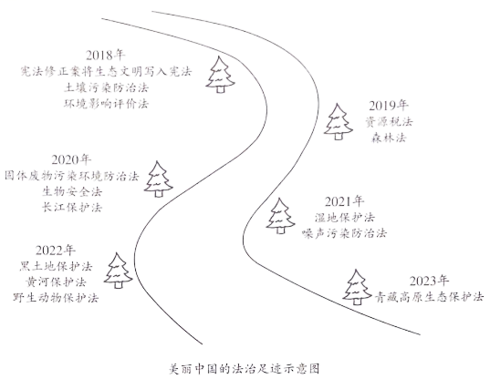

2023年北京中考道德与法治 第19题 解析
19. 美丽中国的法治足迹。
近年来，我国先后制修订一系列生态环境保护法律。

时间镌刻不朽。今天，我国生态环境法治建设取得显著成效：河长制带来河长治，一幅幅鱼翔浅底、人水相亲的图画徐徐铺展；日益完善的湿地生态补偿制度，让保护生态不吃亏、能受益的局面渐成常态……美丽中国的法治足迹铺陈延伸，让祖国的天更蓝、山更绿、水更清。
（1）说明美丽中国的法治足迹中蕴含的道理。
（2）青少年不仅是法治中国建设的受益者，更应该成为参与者和推动者。简要说明青少年能为美丽中国的法治建设做些什么。
【答案】（1）贯彻绿色发展理念，守护绿水青山。宪法是我国的根本法。科学立法，完善环境保护法律体系。良法之治，发挥法治的引领、规范作用，为美丽中国建设提供法治保障。
（2）树立法治意识，践行环保理念。
【解析】
【分析】考点考查：正确认识生态文明建设、依法治国
能力考查：调动和运用所学知识分析问题的能力
核心素养：政治认同、法治观念
【小问1详解】
第一步：审设问，明确主体、作答范围及作答角度。
本题的设问主体为国家，需要运用生态文明建设、依法治国的有关知识，从体现类习题的角度进行作答。
第二步：审材料，提取关键词，链接教材知识。
关键词①：近年来，我国先后制修订一系列生态环境保护法律→可链接科学立法，完善环境保护法律体系；法治的作用；贯彻绿色发展理念，守护绿水青山；
关键词②：宪法修正案将生态文明写入宪法→可链接宪法是国家的根本大法。
第三步：整合信息，组织答案。
【小问2详解】
本题从青少年角度考查如何建设美丽中国的法治建设，为开放性试题，符合题意即可。